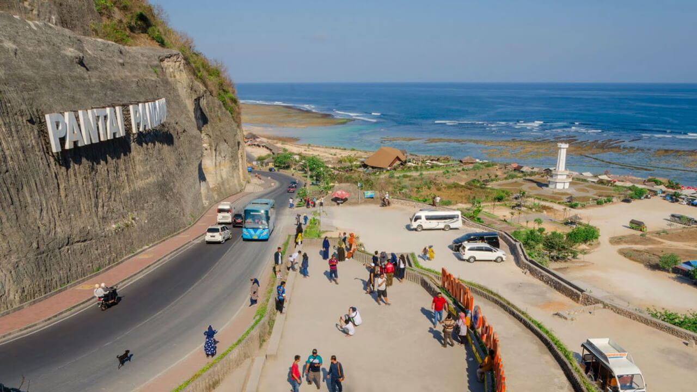
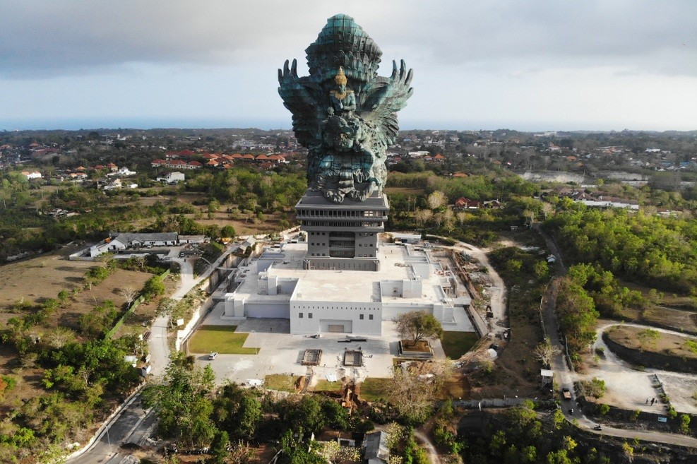
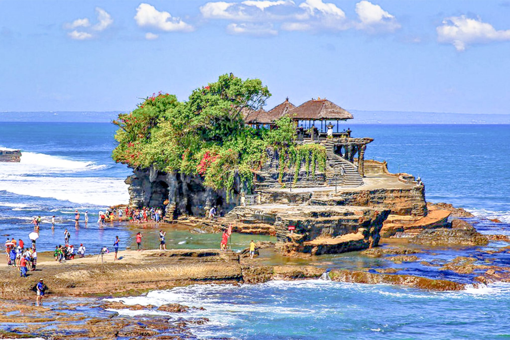
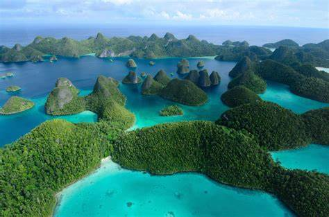
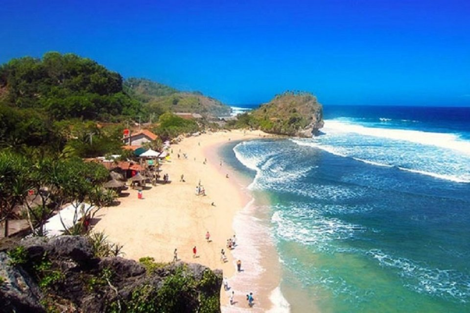
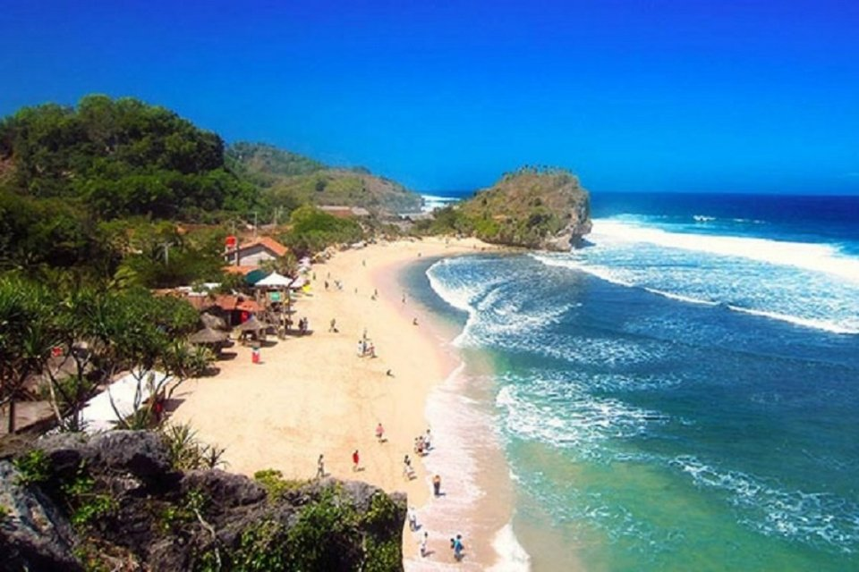

Tempat Wisata Terbaik di Indonesia
Beberapa tempat wisata terbaik yang dapat dikunjungi di Indonesia antara lain:
- Bali - Bali adalah sebuah provinsi di Indonesia yang terletak pada bagian barat Kepulauan Nusa Tenggara dan beribu kota di Kota Denpasar. Pulau Bali, yang merupakan pulau terbesar di Provinsi Bali, memiliki beberapa julukan, di antaranya Pulau Dewata dan Pulau Seribu Pura. Selain terdiri dari pulau Bali, wilayah provinsi Bali juga terdiri dari pulau-pulau yang lebih kecil di sekitarnya, yaitu pulau Nusa Penida, pulau Nusa Lembongan, pulau Nusa Ceningan, Pulau Serangan, dan Pulau Menjangan. Secara geografis, Bali terletak di antara Pulau Jawa dan Pulau Lombok. Mayoritas penduduk Bali adalah pemeluk agama Hindu.   
- Yogyakarta - Nama Yogyakarta berasal dari dua kata, yaitu Ayogya atau Ayodhya yang berarti "kedamaian" (atau tanpa perang, a "tidak", yogya merujuk pada yodya atau yudha, yang berarti "perang"), dan Karta yang berarti "baik". Letak Kota Yogyakarta dilalui oleh tiga sungai, yaitu Sungai Winongo, Sungai Gajahwong dan Sungai Code. Pada tanggal 7 Oktober 1756, bangunan keraton selesai dibangun, sekaligus menjadi tanggal pemindahan pusat pemerintahan dari Gamping ke keraton baru, yang kelak bernama Keraton Ngayogyakarta Hadiningrat. Peristiwa pemindahan pusat pemerintahan Kesultanan Yogyakarta tersebut diperingati sebagai hari ulang tahun Kota Yogyakarta, sampai saat ini.
- Raja Ampat - Kabupaten Raja Ampat adalah salah satu kabupaten di provinsi Papua Barat Daya, Indonesia. Ibukota kabupaten ini terletak di Waisai, dimana Waisai menjadi pusat pemerintahan Kabupaten Raja Ampat. Kabupaten ini memiliki 610 pulau, termasuk kepulauan Raja Ampat. Empat di antaranya, yakni Pulau Misool, Salawati, Batanta dan Waigeo, merupakan pulau-pulau besar. Dari seluruh pulau hanya 35 pulau yang berpenghuni sedangkan pulau lainnya tidak berpenghuni dan sebagian besar belum memiliki nama. Raja Ampat dikenali dengan keindahan laut dan pemandangannya. Pulau ini diakui sebagai rumah bagi keanekaragaman hayati terumbu karang terbesar di dunia. Dengan lebih dari 550 varietas karang yang berbeda, 700 jenis moluska, dan 1.427 spesies ikan yang berbeda, wilayah ini merupakan pusat keanekaragaman hayati laut yang signifikan. 
 
